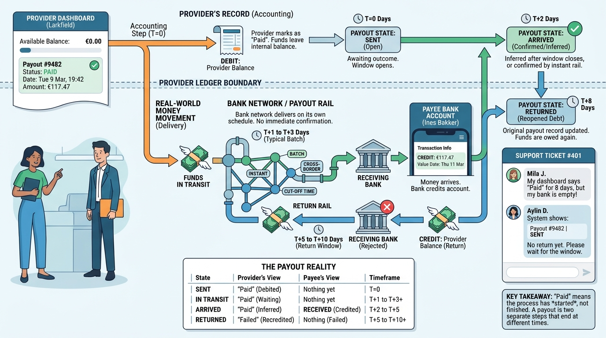

Part III — LEDGER: Recording and Moving Money
Getting Money Out: Payouts and Money Movement
AI-assisted: researched and written with Claude Code; illustrations generated with Gemini. How this works

Image generated by Google Gemini (gemini-3-pro-image-preview)